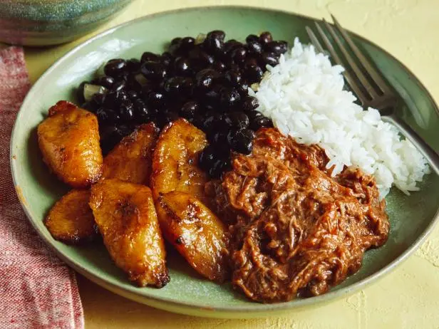

Pabellon Criollo

Home
Description
Pabellón Criollo is the national dish of Venezuela, featuring four core components: shredded beef (Carne Mechada), seasoned black beans (Caraotas Negras), fluffy white rice, and sweet fried plantains (Tajadas).
Ingredients
- Carne Mechada (Shredded Beef):
- 1/2 to 2 lbs flank steak or skirt steak.
- 1 onion (halved for boiling, diced for the sofrito).
- 2 cloves garlic, minced.
- 1 red bell pepper, diced.
- 1 cup tomato sauce or crushed tomatoes.
- 1 tbsp Worcestershire sauce.
- Bay leaf, salt, and black pepper, to taste.
- Vegetable oil for cooking.
- Caraotas (Black Beans):
- 1 cup dried black beans (soaked overnight) or 2 cans black beans.
- Small onion and bell pepper, finely chopped.
- 2 cloves garlic, minced.
- 1 bay leaf.
- Cumin, salt, and pepper, to taste.
- White Rice
- 1/2 cups long-grain white rice
- 3 cups water or broth.
- 1 tbsp oil, salt, and a garlic clove.
- Tajadas (Fried Plantains):
- 2 ripe plantains (yellow with black spots), peeled and sliced lengthwise or on a diagonal.
- Vegetable oil for frying.
Instructions
- Cook the Beef (Carne Mechada):
- Place the flank steak in a pot with water, half an onion, a bay leaf, and a pinch of salt. Simmer for 1/2 to 2 hours until tender, then let it cool and shred it into thin strands. Reserve some of the cooking broth.
- Heat oil in a large skillet or Dutch oven. Sauté the diced onions, garlic, and red bell peppers until soft.
- Stir in the shredded beef, tomato sauce, Worcestershire sauce, cumin, paprika, salt, pepper, and a splash of the reserved beef broth. Simmer for 15 to 20 minutes until the flavors meld.
- Cook the Black Beans:
- Place the flank steak in a pot with water, half an onion, a bay leaf, and a pinch of salt. Simmer for 1.5 to 2 hours until tender, then let it cool and shred it into thin strands. Reserve some of the cooking broth.
- Heat oil in a large skillet or Dutch oven. Sauté the diced onions, garlic, and red bell peppers until soft.
- Stir in the shredded beef, tomato sauce, Worcestershire sauce, cumin, paprika, salt, pepper, and a splash of the reserved beef broth. Simmer for 15 to 20 minutes until the flavors meld.
- Cook the Rice:
- Sauté the garlic in a little oil, add the rice to toast lightly, then pour in water and salt. Cover and cook on low heat for about 20 minutes until fluffy and separate.
- Fry the Plantains:
- Heat a shallow layer of oil in a pan over medium heat. Fry the plantain slices until deep golden-brown and caramelized on both sides, then drain on paper towels.
- Assemble and Serve
- Arrange a generous scoop of white rice next to a scoop of black beans and a portion of shredded beef on the plate.
- Tuck the sweet fried plantains alongside the plate.
- Optional traditional variations:Add a fried egg on top of the beef (Pabellón a Caballo), arrange the plantains like a fence (Pabellón con Baranda), or serve with fresh white cheese, avocado slices, or a small arepa.